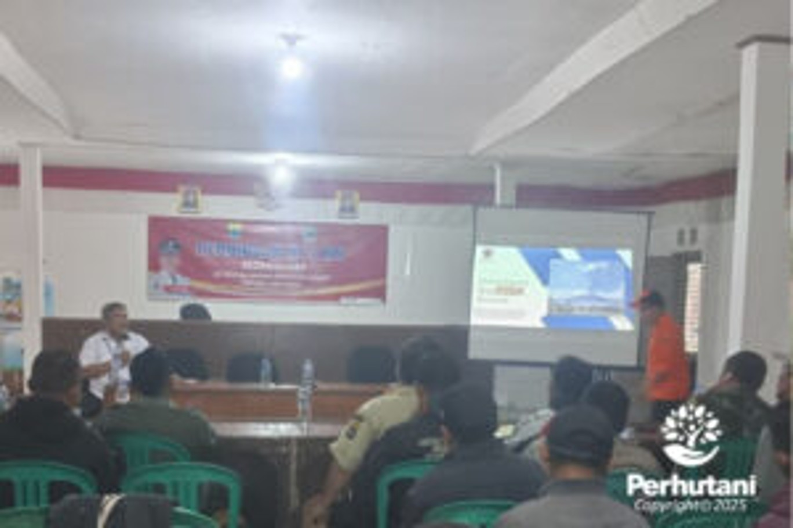

CIANJUR, PERHUTANI (05/01/2026) | Memasuki penghujung tahun 2025 yang diwarnai cuaca ekstrem, Perum Perhutani Kesatuan Pemangkuan Hutan (KPH) Cianjur bersinergi dengan Badan Penanggulangan Bencana Daerah (BPBD) Kabupaten Cianjur dan Pemerintah Desa (Pemdes) Cidadap menggelar sosialisasi kesiapsiagaan bencana hidrometeorologi. Kegiatan yang mengedepankan mitigasi partisipatif masyarakat ini dilaksanakan untuk menekan risiko bencana di wilayah rawan longsor dan banjir, pada Jumat (02/01) bertempat di Aula Kantor Desa Cidadap.
Hadir dalam kegiatan tersebut Plt. Wakil Administratur KPH Cianjur Arto Sunardi beserta jajaran, Danru Polhutmob Supriadi beserta anggota, Kepala Resort Pemangkuan Hutan (KRPH) Campaka Baban Sobandi beserta jajaran, Analis Kebencanaan BPBD Kabupaten Cianjur Wawan Setiawan beserta jajaran, Kepala Desa Cidadap Budiman beserta jajaran, Babinsa Warung bitung Suparman, dan masyarakat sekitar.
Wakil Administratur KPH Cianjur Arto Sunardi menekankan pentingnya peran serta masyarakat dalam menjaga fungsi hutan sebagai penyangga kehidupan sekaligus benteng alami dari bencana.
"Kami tidak bisa bekerja sendiri dalam mengawasi kawasan hutan yang luas. Melalui mitigasi partisipatif, kami mengajak masyarakat Desa Cidadap untuk menjadi garda terdepan dalam memberikan informasi awal jika ditemukan retakan tanah atau potensi longsor di dalam kawasan. Hutan yang terjaga adalah jaminan keselamatan warga di bawahnya," ujarnya.
Sementara itu, Analis Kebencanaan BPBD Kabupaten Cianjur Wawan Setiawan mengingatkan bahwa kesiapsiagaan harus dimulai dari unit terkecil, yaitu keluarga dan desa. Mengingat topografi Cianjur yang berbukit, ancaman longsor dan banjir bandang menjadi perhatian utama.
"Kesiapsiagaan bukan berarti takut, tapi paham apa yang harus dilakukan. Kami mengapresiasi langkah Perhutani dan Pemdes Cidadap yang proaktif. Kami meminta warga untuk selalu memantau info cuaca dan segera melakukan evakuasi mandiri jika melihat tanda-tanda alam yang tidak biasa, terutama saat hujan deras turun lebih dari dua jam tanpa henti," ungkapnya.
Kepala Desa Cidadap Budiman menyambut baik kolaborasi lintas sektoral ini. Menurutnya, pemahaman warga mengenai batas kawasan hutan dan risiko bencana masih perlu terus ditingkatkan.
"Selama ini warga seringkali bimbang antara kebutuhan lahan dan keselamatan. Dengan sosialisasi ini, Pemdes Cidadap berkomitmen untuk memperketat pengawasan pemanfaatan lahan di area lereng. Kami berterima kasih kepada Perhutani dan BPBD yang telah membekali warga kami dengan pengetahuan teknis mengenai deteksi dini bencana," pungkas Kades Cidadap.
Editor: WK
Copyright © 2026 Warta Nusantara Barat